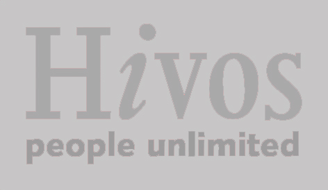

Conocer quiénes son tus candidatos a diputación federal de acuerdo a tu ubicación geográfica, usando el GPS de tu teléfono.
Podrás saber si los candidatos ya presentaron las 3 declaraciones que la sociedad civil les está exigiendo: su declaración fiscal (si han pagado o no sus impuestos), su declaración de intereses (si han realizado actividades o si tienen relaciones que podrían interferir con el ejercicio de sus funciones) y su declaración patrimonial (el valor de los bienes que posee).
Mandarles un tuit a tus candidatos para felicitarles por cumplir con la presentación de sus declaraciones, o bien exigirles públicamente que lo hagan.
Ligue Político es un proyecto de Sociedad en Movimiento y Fáctico, realizado con el apoyo de Hivos, y con datos e indicadores de Candidato Transparente y Por El México Que Merecemos, quienes dieron acceso a sus bases de datos.
